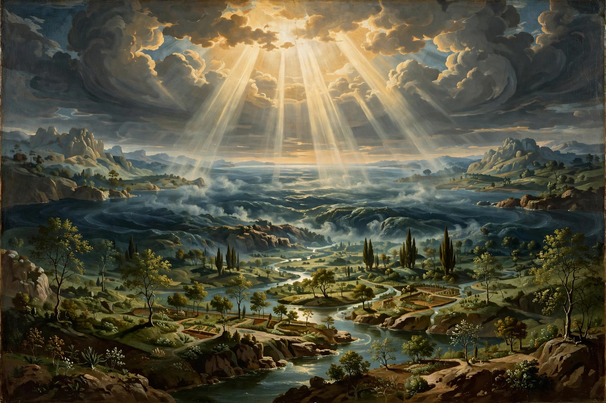

The Book of Genesis (from Greek Γένεσις, "origin"; Hebrew: Bereshit, "In the beginning") is the first book of the Hebrew Bible and Christian Old Testament, and the first of the five books of the Torah / Pentateuch traditionally ascribed to Moses.

The primeval history (chapters 1–11) recounts Creation, Adam and Eve and the Fall, Cain and Abel, Noah and the Flood, and the Tower of Babel. The patriarchal history (12–50) follows Abraham, Isaac, Jacob and Joseph, God's covenants, and Israel's descent into Egypt.
Modern scholarship sees Genesis as compiled from multiple sources over centuries, reaching final form in the Persian period. It establishes themes of creation, covenant, promise and blessing central to Judaism and Christianity.